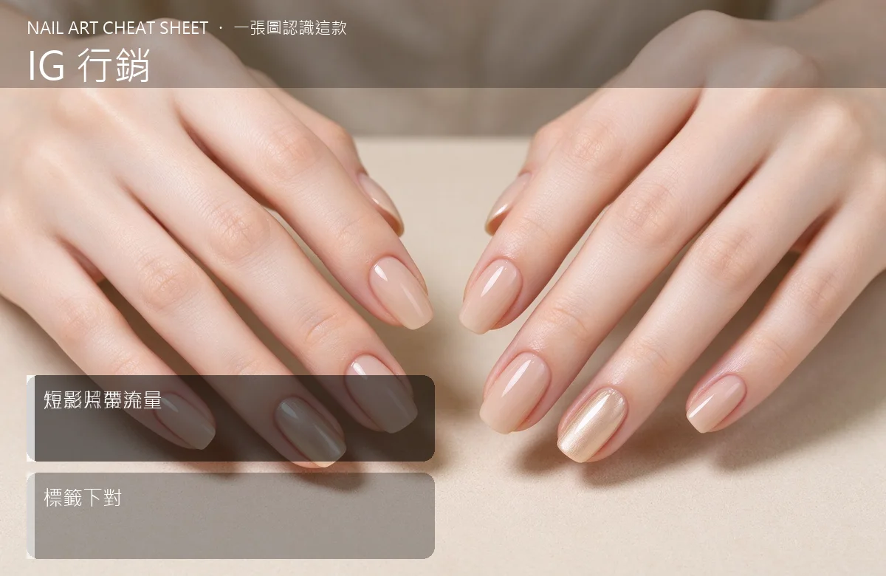

美甲IG 行銷是什麼？中階入門攻略
IG 不是把作品照隨便po上去就有人預約，光線、排版、Reels、標籤對了，流量才進得來。
IG 行銷原理與辨識重點：美甲師不說的作品照要亮
IG 對美甲師來說就是『免費的線上型錄』。客人在預約前，幾乎都會先翻你的 IG 看作品、看氣質。經營重點有四個：作品照要『光線足、背景乾淨』；每週至少一則 Reels 拍施作過程或 before／after；標籤要下在地關鍵字（例如 #台中美甲 #逢甲美甲）；個人檔案要寫清楚服務範圍和預約方式。
誰適合做IG 行銷？社群曝光對號入座
IG 開了帳號卻只有 30 則貼文、不到 100 個追蹤的美甲師；或作品做得很漂亮但都沒人看到的人。
IG 行銷美甲施作步驟：作品照＋Reels
第一步：找一面『好光牆』——靠近窗邊、自然光最漂亮，作品照用那面牆固定拍。第二步：固定每週發 3–4 則貼文，其中 1 則一定要是 Reels（例如 15 秒的貓眼施作縮時）。第三步：每則貼文下 5–8 個標籤：自己的店號＋城市＋地區＋風格（#貓眼美甲 #韓系美甲）。第四步：個人檔案放『服務項目＋LINE 預約連結＋地址』三個資訊。
IG 行銷優缺點分析：美甲持久度與傷甲評估
| 優點 | 說明 |
|---|---|
| IG 經營好，你的成本幾乎是零，但會自動被在地客人搜到；作品照拍得美，你自己也會越做越有成就感。 | 是通用流派的招牌，中階就能上手 |
| 缺點 | 說明 |
| 前期要 2–3 個月才看得到流量起色；別幻想發兩則就爆單。要持續。 | 前置與最雷的 IG 主人：①照片光線慘白、背景淩亂；②貼文只發作品照、從不發 Reels；③標籤下一堆 #美 #漂亮 這種無關字，等於沒下；④個人檔案沒寫地址，客人找不到你。沒顧好會打折 |

IG 行銷新手雷區：短影片帶流量與常見錯誤
注意：最雷的 IG 主人：①照片光線慘白、背景淩亂；②貼文只發作品照、從不發 Reels；③標籤下一堆 #美 #漂亮 這種無關字，等於沒下；④個人檔案沒寫地址，客人找不到你。
IG 行銷和其他美甲做法的差別比較
IG 行銷跟『花錢投放廣告』不一樣。初期 IG 自然流量就夠你用，不要急著砸錢下廣告。先把內容做好、把在地關鍵字吃好，比什麼都強。
IG 行銷美甲常見問題 FAQ
Q：一定要拍 Reels 嗎？ A：一定要。IG 演算法現在偏愛短影片，純圖文很難被陌生客人看到。15 秒施作縮時就夠，不用剪到很厲害。
Q：要不要拍自己入鏡？ A：要。偶爾露臉介紹自己、分享保養小知識，信任感會倍增。客人預約的不只是技術，也是『這個人』。
Q：文案要寫很長嗎？ A：不用。一句講重點＋2–3 個實用小知識就好。太長沒人看完，重點是標題有鉤子。